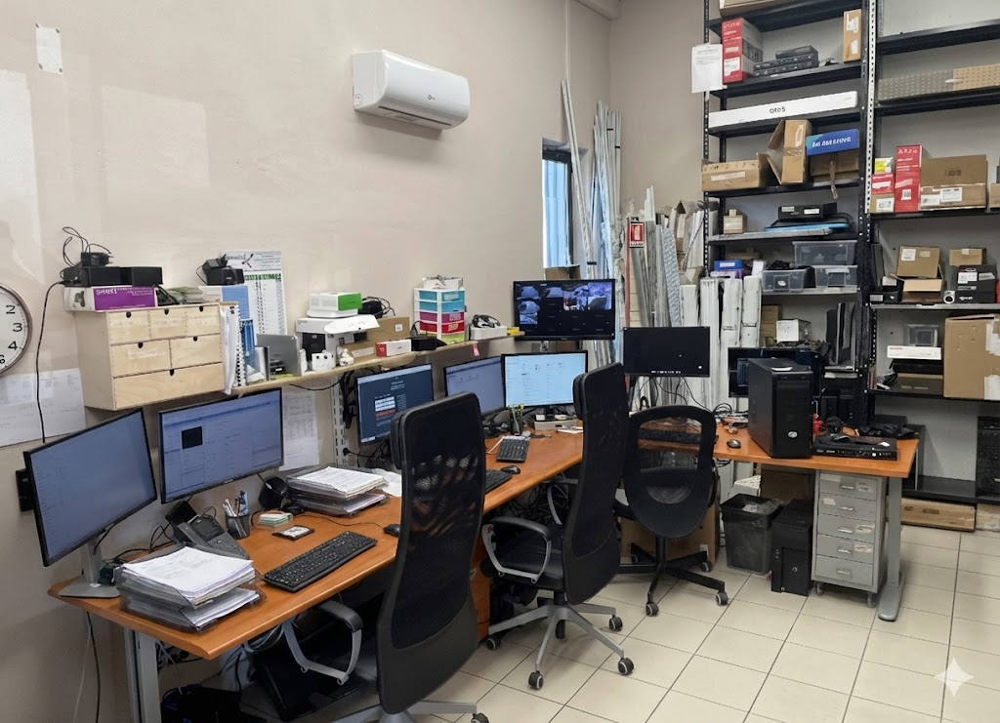
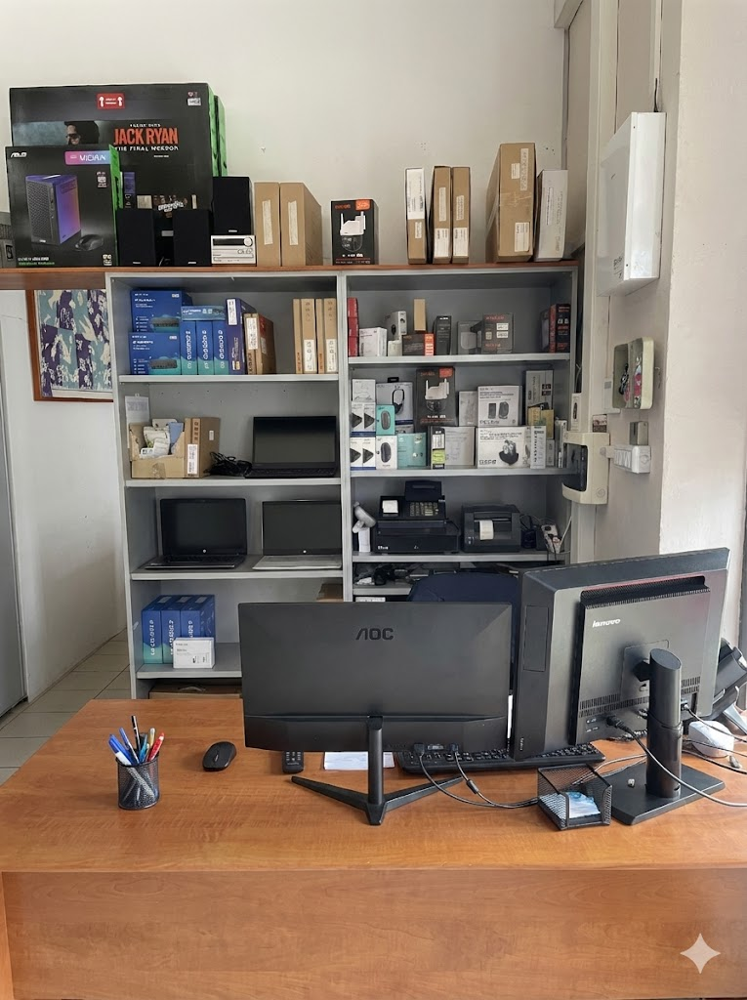

Soluzioni Informatiche per il tuo Lavoro
Da oltre 30 anni, A.M. Tecnology è il partner informatico di riferimento in Irpinia. Risolviamo i problemi tecnici della tua azienda, Comune o studio professionale in modo rapido e sicuro.
Richiedi Assistenza ImmediataTecnologie & IT
Fornitura e assistenza su PC, Server fisici e virtualizzati, sistemi di backup NAS per proteggere i tuoi dati aziendali da perdite e virus.
Richiedi Info →Sicurezza e Telecamere

Progettiamo impianti di Videosorveglianza IP, sistemi di allarme intelligenti e installiamo Firewall per bloccare intrusioni nella rete della tua azienda.
Scopri di più →Chi Siamo
Affidati a chi ha un'esperienza trentennale. Tra i nostri clienti ci sono Enti Pubblici, Comuni e Asl. La tua azienda è in mani sicure.
La nostra storia →